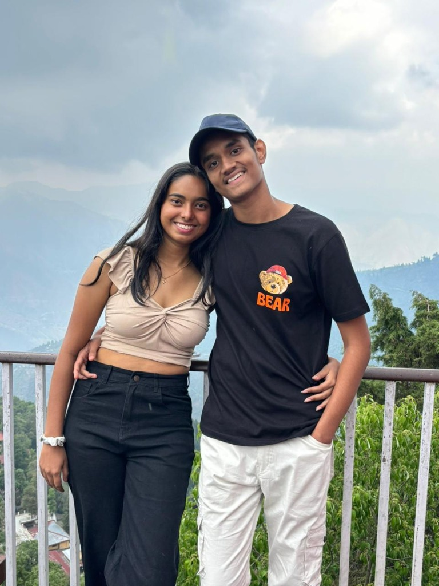
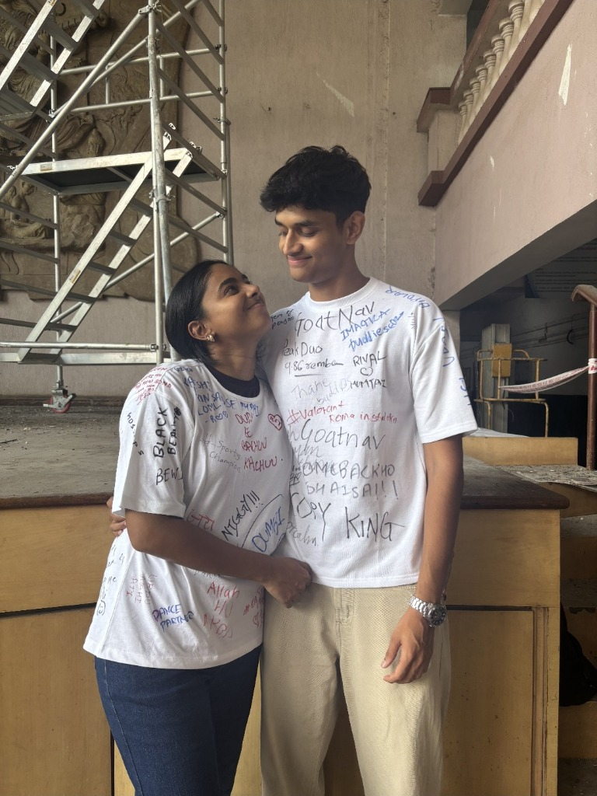

Sara, this website is a memory in the making—one that we will always look back on as the story of one of our
biggest fights, and how we overcame it. Every single time we feel like a disagreement might be the end, it never
is. We stay, and we choose to fix things. Right now, as you read this, we are doing it again—working to heal and
come back even stronger. We've always believed that every challenge we face only brings us closer together, and I
am so incredibly proud of the healthy way we approach our fights, choosing to grow together instead of giving up
like any average couple.
Timeline

This photo takes us back to our college IV to Uttarakhand—honestly, the best trip I’ve ever had in my life,
even topping our BE trip. Back then, we were just in our second year, trying to figure out how to survive
college life with so many things still left to figure out. But this was the trip where we were actually coming
together. We were still figuring out what love really was, and that raw innocence is what made everything so
special to me.
Looking at this picture now, it's amazing to realize how far we've come—nearly 2 years of being officially
together, and 3 years unofficially. This photo is like a trophy for our journey, celebrating the milestone of
reaching this far. And by the way, thank you for accepting my 'taklu' phase back then! It was the moment I
realized you truly love me for who I am, from the very depths of your heart.

This photo is from when we recently graduated together. Graduating by your side was the absolute best feeling,
but it was also really hard for me to accept that our student days were finally coming to an end. To be honest,
I miss those days so much—sitting next to each other daily, attending lectures, eating our tiffins together, and
having the best time trying different things in the canteen (even if some of them were pretty questionable
choices!). Figuring out and experiencing everything with you has always been so special to me.
We studied together, passed our exams together, and had so much in common that college was truly the space that
brought us close. I am endlessly grateful for our college—because even if it didn't give me a job, it gave me
you, which is the most important thing in my life that I will ever get. This picture says a lot by capturing our
final goodbye to our student days and one of the best phases of our lives.
Apology
Dear Sara,
I am really, really sorry for the past few days. I know I have been a complete jerk to you, and I treated you so
badly. You deserved none of it, but you still had to go through so much just because of my negligence and my
failure to prioritize you. I know my actions have hurt you far more than my words ever could, and even if I say
sorry for every single thing I've done wrong, it still won't be enough.
I know I promised to always keep you like a little princess, but I haven't been successful at doing that lately,
and I regret it so much. It hurts to know that even when I try hard, I sometimes fall short of being the version
of a boyfriend that you need me to be. But that won't make me give up. You know that I will never give up on us.
Even if I try my best and fall short, I will still keep trying again and again, day after day, to finally become
the person you deserve.
I am so extremely sorry for the way I have been behaving with you over the past few days—none of it is justified.
Once again, I am so sorry for everything I've done, and I genuinely apologize from the bottom of my heart. I know
it might be foolish of me to expect forgiveness right away, but I just want to keep saying sorry to my little
baby, and I promise to keep improving every single day until I finally get it right.
With all my love,
Letter from Dudu's Heart
A Symphony of Apology from My Falling Heart
This letter is filled with intense love, symbolizing my affection for you.
Dear Sara,
You are the most perfect and beautiful girl I have ever met in my life, Sara. You have the most perfect hair,
eyes worth staring at for days, a smile worth watching for hours, and a heart worth loving forever. Your kindness
was what made me fall in love with you in the first place—your nature of helping everyone and always wishing good
for others is what I truly adore. You are a genuine gem of a person, Sara, and someone I know I could never, ever
hate in my life.
Every single time you start a sentence with "pata hai aaj kya hua," it brings complete peace to my heart. I don't
know how I could ever spend a single day without you, because I just can't imagine it, and to be honest, I don't
even want to. I know I wouldn't be able to live accepting the fact that we aren't together—I couldn't survive that
reality even for a second.
You have always been so special to me. You are my only love, and you will always be my only love. I don't want
anyone else in your place because you are the most perfect girl to ever exist on this planet. I will never, ever
leave you. I love you, and I will keep loving you until my last breath, my bubrani.